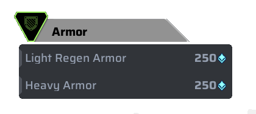
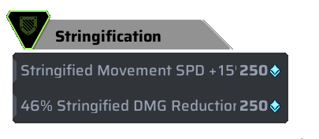
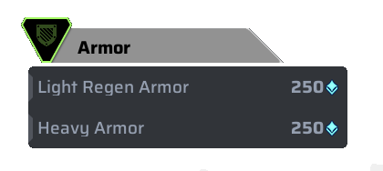
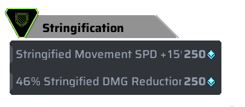

Skills
Active Skill: Healing Drone

Type: Healing
Kokona deploys a healing drone that hovers over the chosen target, and restores armor to the target and all nearby allies
Details
- The drone has a cooldown of 25 seconds and last 30 seconds before flying away. The drone can also be destroyed after the player takes 50 damage.
- The drone heals its target 0+5/sec and nearby allies 0+5/sec
- The drone-giving animation can be canceled by gliding right after using the skill. This will still give your chosen target the drone
How to play
Passive Skill: First Aid

Type: Rescue
When Kokona is out of combat, she will slowly start regenernating her hp. Kokona can also deploy a recuse drone to rescue nearby downed allies
Details
- Heals 0+2/sec.
Ultimate Skill: Reconstruction

Type: Resurrection
Kokona can revive a fallen ally at her general location.
Details
- Cost: 7 Ultimate Points
- It takes 0.6 seconds + 1.8 recovery time to start reviving
- 5.7 seconds to fully revive the ally
- Does not reload any of ally's weapon
- Resurrection drone health has 200 and can be destroyed by getting shot at
- Allies that were resuurected will instantly be killed instead of getting knocked once they have no hp.


 


